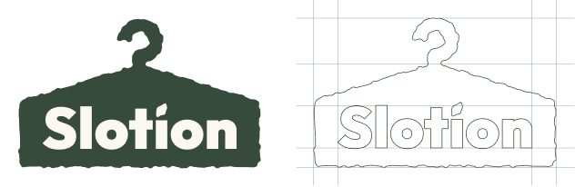
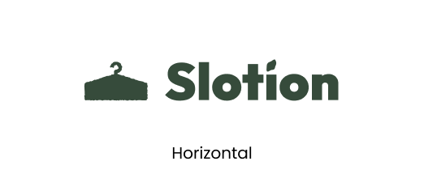
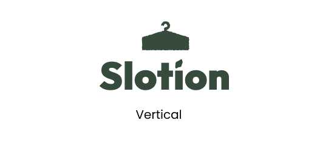
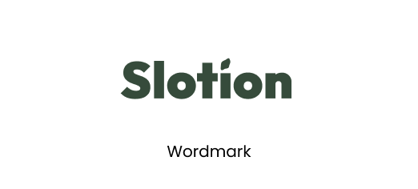
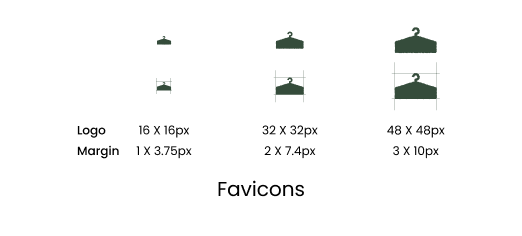
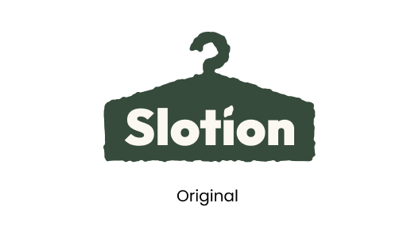
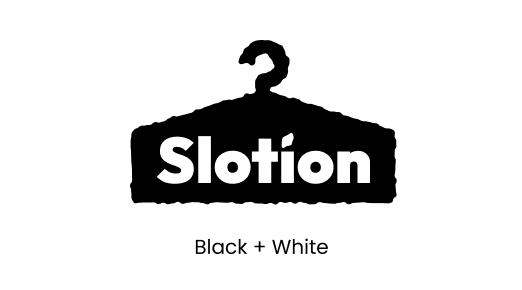
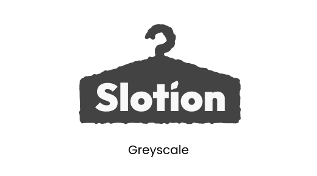
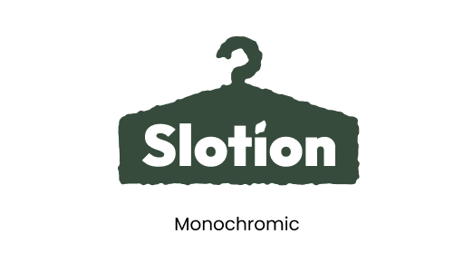
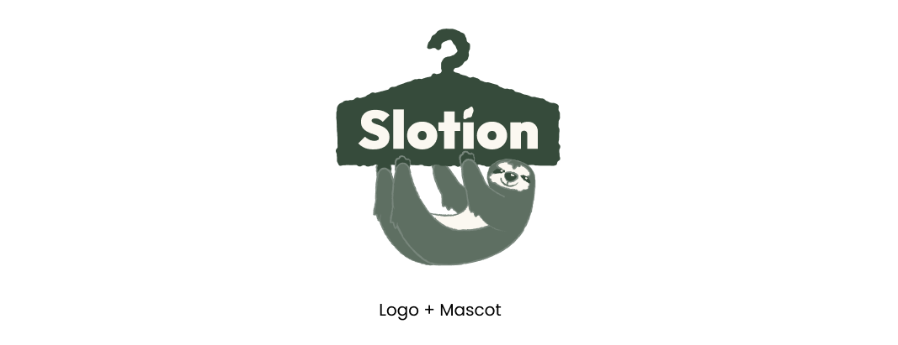

Logo Rationale

The Slotion logo signifies unity between fashion and nature. It represents Slotion’s objective to support sustainability by promoting slow-fashion.
Shape
The shape draws inspiration from a shrubbery combined with a hanger, symbolising harmony between fashion and nature.
The wordmark uses Slotion’s typeface Outfit, with the addition of a leaf shape replacing the dot on top of an “i” to extend the nature theme.
Colour
Green and beige from the Slotion colour palette are used to emphasize Slotion’s objective to promote sustainability.


Variations








